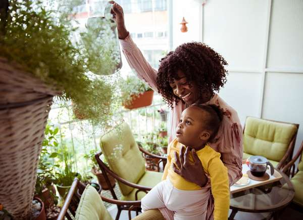

My mom loves houseplants ever since I'm a kid our house was always full of green leafs and flowers. Unfortunatly, they always die and it makes her so sad. So i made this page so she can shop for her favorite plants and find tips on how to take care of them
